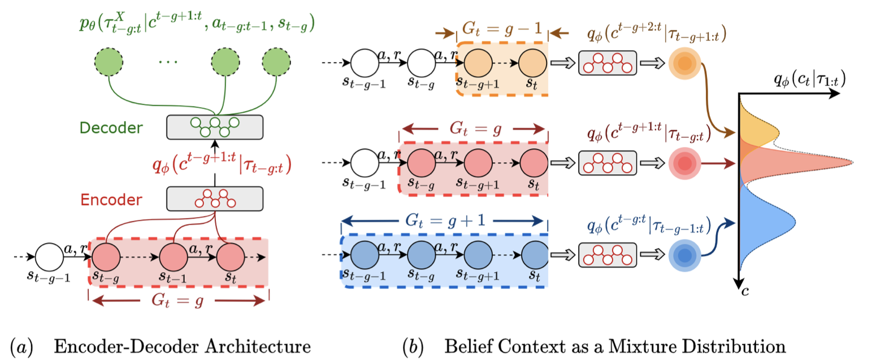

|
Xiaoyu Chen I am Ph.D. student in at IIIS, Tsinghua University, I am fortunate to be advised by Prof. Jianyu Chen, and work closely with Dr. Li Zhao at Microsoft Research. Prior to that, I received dual bachelor's degrees in Computer Science and Technology and Economics (second degree) from Tsinghua University. My research has been recognized with awards including outstanding graduate student honors, outstanding undergraduate thesis award, and a national scholarship. |

|
ResearchMy research endeavors to develop human-like embodied agents, specializing in foundation models for embodied decision making and Reinforcement Learning. |
|
IGOR: Image-GOal Representations are the Atomic Control Units for Foundation Models in Embodied AI
Xiaoyu Chen*, Junliang Guo*, Tianyu He*, Chuheng Zhang*, Pushi Zhang, Derek Cathera Yang, Li Zhao*, Jiang Bian arxiv New! We introduce IGOR, a framework that learns latent actions from Internet-scale videos that enable cross-embodiment and cross-task generalization. |
|

|
HiRT: Enhancing Robotic Control with Hierarchical Robot Transformers
Jianke Zhang, Yanjiang Guo, Xiaoyu Chen, Yen-Jen Wang, Yucheng Hu, Chengming Shi, Jianyu Chen CoRL 2024 A Hierarchical Robot Transformer framework that enables flexible frequency and performance trade-off. |
|
Prediction with Action: Visual Policy Learning via Joint Denoising Process
Yanjiang Guo, Yucheng Hu, Jianke Zhang, Yen-Jen Wang, Xiaoyu Chen, Chaochao Lu, Jianyu Chen NeurIPS 2024 A novel framework to predict images and robot actions through joint dinoising process. |
|
|
Asking Before Acting: Gather Information in Embodied Decision Making with Language Models
Xiaoyu Chen, Shenao Zhang, Pushi Zhang, Li Zhao, Jianyu Chen Preprint A simple yet effective method for embodied agents to proactively gather information before acting, minimizing unnecessary exploration and mistakes. |
|
|  |
An Adaptive Deep RL Method for Non-Stationary Environments with Piecewise Stable Context
Xiaoyu Chen*, Xiangming Zhu*, Yufeng Zheng, Pushi Zhang, Li Zhao, Wenxue Cheng, Peng Cheng, Yongqiang Xiong, Tao Qin, Jianyu Chen, Tie-Yan Liu NeurIPS 2022 A new RL method (SeCBAD) for handling real-world situations where the environment changes abruptly within an episode , allowing agents to adapt to these context variations. |
|
Flow-based Recurrent Belief State Learning for POMDPs
Xiaoyu Chen, Yao Mu, Ping Luo, Shengbo Li, Jianyu Chen ICML 2022 (Outstanding Undergraduate Thesis Award) A new method (FORBES) for learning general continuous belief states in POMDPs, enhances the performance of downstream RL algorithms by reducing approximation errors during state inference. |
|
|
Distributional Reinforcement Learning for Multi-Dimensional Reward Functions
Pushi Zhang*, Xiaoyu Chen*, Li Zhao, Wei Xiong, Tao Qin, Tie-Yan Liu NeurIPS 2021 Model the joint return distribution across multiple reward sources in distributional RL, capturing both inherent randomness and rich correlations. |
|
|
Towards Generalizable Reinforcement Learning for Trade Execution
Chuheng Zhang, Yitong Duan, Xiaoyu Chen, Jianyu Chen, Jian Li, Li Zhao IJCAI 2023 Investigate and mitigate overfitting issues that arise when applying reinforcement learning to optimized trade execution. |
|
|
Noisy Agents: Self-supervised Exploration by Predicting Auditory Events
Chuang Gan, Xiaoyu Chen, Phillip Isola, Antonio Torralba, Joshua B. Tenenbaum IROS 2022 A novel type of intrinsic motivation that encourages the agent to understand the causal effect of its actions through auditory event prediction. |
|

|
Certifiably Robust Interpretation via Renyi Differential Privacy
Ao Liu, Xiaoyu Chen, Sijia Liu, Lirong Xia, Chuang Gan AAAI 2023 journal track A new interpretation method for convolutional neural networks (CNNs) based on Rényi differential privacy. |
Teaching and Service |
|
|
This website is taken from here. |